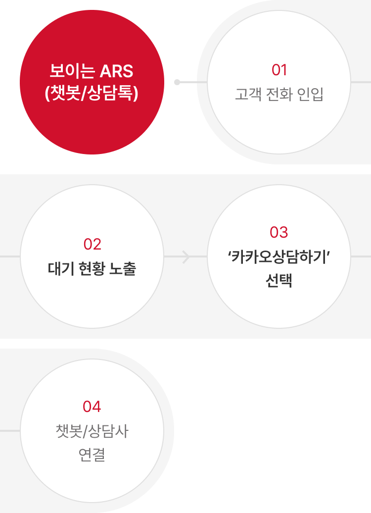
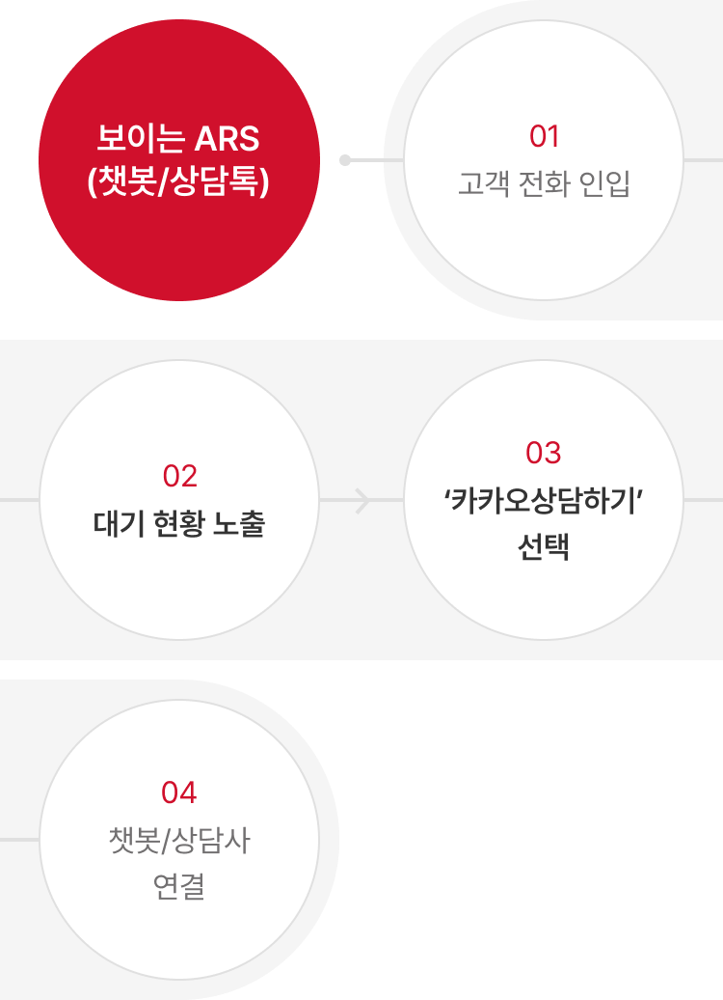

컨택센터 솔루션
고객과 효율적으로 소통하기 위한 최신 컨택센터 솔루션으로 고객 서비스의 효율성과 만족도를 높입니다.
-
통합 CRM 솔루션
(CXpert CRM)통합 CRM 솔루션은 전화, 이메일, 게시판, 채팅 등 다양한 고객 접점 채널을 한 화면에서 관리할 수 있는 고객 맞춤형 통합 상담 솔루션입니다. 고객 상담이력 및 응대유형 통합 관리 등 고객센터 운영에 효과적인 기능을 제공해 효율성을 극대화합니다.
상담이력 통합관리 CXpert CRM
-
- 전화상담
- 전화상담 이력관리/CTS 연동
-
- 상담이력 통합관리 가능
- 각종 채널의 상담 이력을 통합 관리
-
- 채팅상담
- 카카오톡, Web Chat, Line
-
- 클라이언트 시스템
- 클라이언트 시스템 연동(별도 개발 필요)
-
- 게시판상담
- 게시판 문의를 API방식으로 연동
-
- 고객센터에 특화된 통계/화면 제공
- Advisor별/문의 타입별/시간대별 통계
- 생산성 통계:CPD,CPH,AHT,ACT,ACW
-
- 이메일상담
- 고객사 이메일 서버를 연동
-
- 다국어 대응 가능
- 영어,일어,한국어
-
-
STT/TA 솔루션
(Transpeech)트랜스피치(transpeech)는 자체 개발한 클라우드 기반의 음성인식 분석 솔루션으로, 콜 시스템의 음성 데이터를 텍스트로 변환해 필요한 데이터를 분석하고 도출합니다. 상담직원에게는 실시간 스크립트 추천, 상담이력 자동 요약과 같은 상담지원 기능을 제공하고 고객센터 관리자에게는 상담 모니터링, 자동 품질 평가, 고객의 소리(VOC) 분석 등 상담 품질을 강화하는 기능을 제공해 컨택센터 운영 효율성을 높입니다.
- 콜 시스템
- 화자 분리 서버
- transpeech
-
- STT(Speech To Text)
- 음성을 텍스트로 변환
- STT 엔진(음향 모델, 언어 모델)
- 최종 변환된 텍스트 데이터를 TA 영역으로 전달
-
- TA(Text Analysis)
- 텍스트로 변환된 내용을 분석하여 필요한 기능으로 변환
- 분석 엔진(상담 Assistant, 셀프 필수 안내 모니터링, 실시간 상담 현황 대시보드, 상담 품질 평가, VOC/이슈/키워드 분석, 단어 사전 관리, 상담 Assistant 관리, 상담 품질 평가표 관리, 기타 등등)
- transpeech
- API
- 고객사 시스템
-
WFM 솔루션
WFM(Workforce Management) 솔루션은 최신 머신러닝 및 딥러닝 기반의 글로벌 표준 예측 모델과 운영 현장의 노하우가 적용된 고객센터로 걸려오는 전화 횟수 및 인력 예측 관리 프로그램입니다. 솔루션 도입 전후 데이터를 바탕으로 고객 기업에 최적화된 예측 모델, 아웃라이어 기준, 이벤트 영향도 등을 분석해 드립니다.
-
보이는 ARS 솔루션
보이는 ARS는 음성 안내와 웹 화면 안내를 동시에 제공해 고객이 화면을 터치하며 소통할 수 있는 솔루션입니다. 상담사가 직접 안내하지 않더라도 고객이 스스로 문제를 해결할 수 있어 상담 효율성과 고객 만족도가 높습니다.
 

-
메신저 기반 협업툴 솔루션
(카카오워크)트랜스코스모스코리아는 카카오워크 종합 업무 플랫폼의 판매 권한을 가진 공식 리셀러 파트너입니다. 솔루션을 도입하기 위한 컨설팅, 커스텀 개발, 고객 상담 등 통합 서비스를 제공합니다.
-
카카오톡 채널 챗봇 &
상담톡카카오톡 채널 챗봇은 카카오 AI 기술을 기반으로 다양한 고객문의에 셀프처리가 가능한 챗봇 솔루션 입니다. 단순 대화 방식의 응대 뿐만 아니라 가입, 예약, 주문 등 다양한 기능 구현이 가능하며, 상담사 연결이 필요한 경우 카카오상담톡으로 전환하여 상담직원과의 대화가 가능합니다.
-
채팅/챗봇 솔루션
(T-chat)트랜스코스모스코리아가 자체 개발한 티챗(T-chat)은 고객 기업의 홈페이지에서 상담사와 실시간으로 대화할 수 있는 웹 채팅 솔루션입니다. 한 명의 상담사가 여러 명의 고객과 동시에 상담할 수 있으며, 단순 고객문의는 챗봇이 대신해 업무 효율성을 높일 수 있습니다.
-
클라우드 고객센터 솔루션
(Genesys Cloud)제네시스 클라우드(Genesys Cloud) 기반의 통합 고객센터 솔루션입니다. 급변하는 비즈니스 환경에 민첩하게 대응 가능한 퍼블릭 클라우드 SaaS 플랫폼입니다. 인프라의 안정성, 확장성, 편의성, 유연한 서비스를 통해 고객 기업에 최적화된 서비스를 제공합니다.
-
서비스관리 CRM 솔루션
(Salesforce Service Cloud)세일즈포스(Salesforce)는 글로벌 No.1 CRM이자 포천(Fortune)지 500대 기업의 90%가 사용 중인 플랫폼입니다. 또한 서비스 클라우드는 고객과 빠르게 연결할 수 있는 옴니채널 서비스 플랫폼입니다. 트랜스코스모스코리아에서는 이렇게 검증된 플랫폼을 제품 구매부터 사후 관리까지 통합적으로 관리하는 맞춤형 서비스를 제공합니다. CRM 솔루션을 구축하면 고객문의를 한 눈에 확인해 빠르게 처리할 수 있으며, SMS/LMS, 이메일, CTI 콜시스템 등 다양한 채널로 확장 및 연동도 가능합니다.
-
보이는 화상 상담 솔루션
고객과 상담사의 양방향 커뮤니케이션이 가능한 실시간 영상 원격 상담 솔루션입니다. 상담사가 실시간으로 영상을 보며 빠르게 해결방안을 제시합니다. 고객이 직접 서비스센터를 방문하지 않아도 즉시 전문가의 상담을 받을 수 있습니다.
-
보이는 상담 솔루션
고객과 상담사가 동시에 같은 화면을 보면서 직접 상호 조작이 가능한 비대면 상담 솔루션입니다. 별도의 앱 설치 없이 고객이 원하는 상담내용을 음성으로 들려주는 동시에 화면으로도 보여줘 내용에 대한 이해도를 높이고 시간은 단축시켜 상담 효율성을 높입니다.
-
비대면 실명인증 솔루션
앱 기반의 금융서비스 이용 시 필수적으로 이루어지는 비대면 실명인증 솔루션입니다. 계좌개설, 대출신청 등 본인인증이 필요한 대면업무를 고객센터 방문 없이 원스톱으로 진행할 수 있습니다.
-
Push 발송 시스템 솔루션
스마트폰 PUSH 대용량 발송 시스템 솔루션으로 그룹 템플릿 관리, 발송금지시간 설정, 예약 PUSH, 모바일 앱 기능 연계 등 하나의 시스템에서 간단하게 통합 PUSH 시스템을 관리할 수 있습니다. 스마트폰 앱의 알림 기능을 활용해 SMS, MMS 발송 비용을 효율적으로 관리합니다.
-
비대면 화상면접 솔루션
시간과 장소의 제약 없이 면접에 응시할 수 있는 영상 녹화 면접 시스템입니다. 면접관은 영상을 확인한 후 결과를 면접자에게 문자메시지로 안내할 수 있습니다.
-
카카오워크 for 대학
온/오프라인 연계 학습을 위한 교육 공간 제공, 교사와 학생의 자유로운 소통 지원, 그리고 수업에 유용한 도구들을 활용할 수 있는 종합 커뮤니케이션 플랫폼입니다. 트랜스코스모스코리아는 카카오워크의 공식 리셀러로서 솔루션을 도입하기 위한 컨설팅, 커스텀 개발, 고객 상담 등 통합 서비스를 제공합니다.
백오피스 솔루션
업무 프로세스의 간소화 및 자동화로 업무 효율성과 생산성을 향상합니다.
-
사무 자동화 RPA 솔루션
RPA(Robotic Process Automation(는 단순반복 업무를 로봇 소프트웨어를 이용해 자동화한 솔루션입니다. IT 인프라를 갖출 필요 없이 쉽고 간편하게 도입할 수 있습니다. AI 엔진과 사전에 정의된 업무 시나리오를 융합해 보다 빠르고 정확하게 업무를 처리할 수 있습니다.
- RPA 적용 전
- 지시자의 업무 배정 후 수행자는 단순 반복 작업 수행
- RPA 적용 후
- 지시자의 로봇 관리를 통해 단순 반복 작업 수행
- 지시자의 업무 배정 후 수행자는 고부가가치 업무 수행
- 기대효과
-
요청업무 관리 솔루션
(T-helpdesk)T-헬프데스크(T-helpdesk)는 업무 협업 과정에서 어려움을 겪는 고객 기업이 보다 수월하게 양방향 커뮤니케이션을 진행할 수 있도록 돕는 협업 솔루션입니다. 진행 사항에 대한 의견을 남길 수 있어 구성원 간 업무 공유가 원활해지고, 메신저 실시간 알림으로 업무를 신속하게 확인할 수 있습니다.
- 업무 요청자
- 요청 등록
- 요청관리시스템 T-Helpdesk 연동 kakaowork
- 업무 처리자
- 요청 처리
- 요청관리시스템 T-Helpdesk 연동 kakaowork
-
영업관리 CRM 솔루션
(Salesforce Sales Cloud)세일즈포스는 글로벌 No.1 CRM이자 Fortune 500대 기업의 90%가 사용 중인 검증된 플랫폼입니다. 세일즈클라우드는 불필요한 반복적 작업을 최소화하고, 한 번에, 한 곳에 영업의 모든 관계에 대해 관리할 수 있는 영업 자동화 플랫폼 영업 정보, 히스토리, 구매 여부 등을 Chatter, Quip, Slack 등의 툴로 신속하고 원활하게 소통하고 협업할 수 있도록 세일즈 프로세스의 모든 단계에 대해 관리 및 모니터링하여 포캐스팅 관리 및 효율적인 의사 결정을 지원할 수 있도록 하는 클라우드 기반 영업 지원(SFA) 플랫폼입니다.

전통적인 IT
-
기업관리 영역
- 애플리케이션
- 데이터
- 런타임
- 미들웨어
- 운영체제
- 가상화
- 서버
- 스토리지
- 네트워크
IaaS (서비스형 인프라)
-
기업관리 영역
- 애플리케이션
- 데이터
- 런타임
- 미들웨어
- 운영체제
-
서비스로 제공됨
- 가상화
- 서버
- 스토리지
- 네트워크
PaaS (서비스형 플랫폼)
-
기업관리 영역
- 애플리케이션
- 데이터
-
서비스로 제공됨
- 런타임
- 미들웨어
- 운영체제
- 가상화
- 서버
- 스토리지
- 네트워크
SaaS (서비스형 소프트웨어)
-
서비스로 제공됨
- 애플리케이션
- 데이터
- 런타임
- 미들웨어
- 운영체제
- 가상화
- 서버
- 스토리지
- 네트워크
-
기업관리 영역
-
영업관리 솔루션 (T-Sales)
트랜스코스모스코리아는 기업 고객 영업 과정에서 필요한 모든 영업 데이터를 수집하고, 관리하는 솔루션을 제공합니다. 안건별 파이프라인을 통해 영업 진행 단계를 파악할 수 있으며, 나이스기업정보 연동을 통해 별도의 자료 조사 없이 기업 정보 확인이 가능하며, 실질적인 영업활동에 대한 관리가 용이해 고객 기업에 대한 전문성과 신뢰성있는 영업 활동을 전개할 수 있어 수집된 데이터를 기반으로 추가 안건 발굴을 위한 데이터 분석 기초 자료도 제공합니다. T-SALES는 자체 개발한 솔루션으로 고객사 환경에 맞게 구축 커스터마이징이 가능합니다.
- 영업 조직
- DB 수집
- 영업관리시스템 T-Sales 연동 구글 캘린더 및 나이스기업정보
- 영업 기획
- DB 분석
- 영업관리시스템 T-Sales 연동 구글 캘린더 및 나이스기업정보
다이렉트 메일 솔루션
효과적인 마케팅을 위한 개인화된 다이렉트 메일 서비스로 고객과의 연결을 강화합니다.
-
다이렉트 메일 옴니 채널 솔루션
우편, 이메일, 모바일 채널에 동일한 콘텐츠를 동시에 만들고 발송할 수 있는 솔루션입니다.
-
Quadient(GMC) 솔루션
트랜스코스모스코리아는 글로벌 No.1 문서 생성 솔루션인 쿼디언트(Quadient)의 공식 리셀러 파트너입니다. 도입 컨설팅부터 개발 및 구축, 고객상담 등 통합 서비스를 제공합니다.
-
네이버 전자문서 유통 솔루션
네이버 공인 전자문서 유통 서비스와 연계하여 법적 효력이 필요한 전자문서를 발송하고, 이력을 관리할 수 있습니다. 등기 우편물을 전자문서로 대체함으로써 친환경 업무 도입 및 비용 절감 효과를 기대할 수 있습니다.
-
네이버 개인인증 솔루션
모바일로 간편하게 본인인증을 할 수 있는 솔루션입니다.
-
보험사 약관관리 솔루션
법 규제 대응이 가능한 약관관리 서비스를 제공합니다. 디지털 약관 뿐만 아니라 출력까지 가능한 토털 서비스로 비용절감 및 프로세스 개선 효과를 제공합니다.
-
실물 조회 솔루션
우편, 이메일, 모바일을 통해 고객이 수신한 안내 문서와 동일한 문서 보관/조회/재발송 솔루션을 제공합니다. 고객과 동일한 문서를 보면서 민원에 효과적으로 대응할 수 있고, 실시간으로 고객이 원하는 채널로 재발송할 수 있습니다.